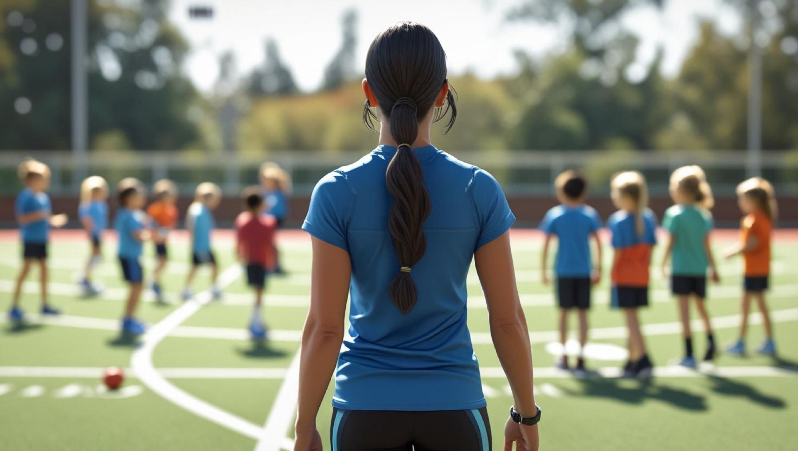

Sport and Exercise Psychology Research
Sport and exercise psychology research.
Michelle's research is in sport and exercise psychology, with an approach that aims to help teachers and children feel supported in sport and physical education. Her work also explores ADHD, attention, and inclusive ways to help children take part with confidence.
Research interests
Keywords
- Sport and exercise psychology
- Physical education
- ADHD
- Teacher confidence
- Primary PE
- Pedagogy
Biography
About Michelle
Michelle Bird is a postgraduate researcher in sport and exercise psychology. Her approach is centred on helping teachers and children feel supported in sport and physical education, with research interests in ADHD, attention, and inclusive participation.
Michelle completed a BSc in Sport, Fitness and Coaching with The Open University, where she developed a strong interest in inclusion in sport. She then completed an MSc in Sport and Exercise Psychology with Health Sciences University, with a dissertation exploring how teachers develop pedagogical confidence to support primary children with ADHD in physical education.
She is now undertaking a PhD with Health Sciences University. Her current project explores how visual instructional strategies can support attentional focus in PE for primary school children with ADHD, connecting research in sport and exercise psychology with practical approaches for inclusive teaching.
Michelle is completing her PhD part time alongside full-time professional work. Balancing research with practice shapes the way she approaches her project, keeping the focus on ideas that are thoughtful, realistic, and useful for teachers and pupils.

Research blog
Building Teacher Confidence to Support ADHD in Primary PE
A research-informed post with practical tips to help PE teachers support children with ADHD in active, inclusive lessons.
Read the post